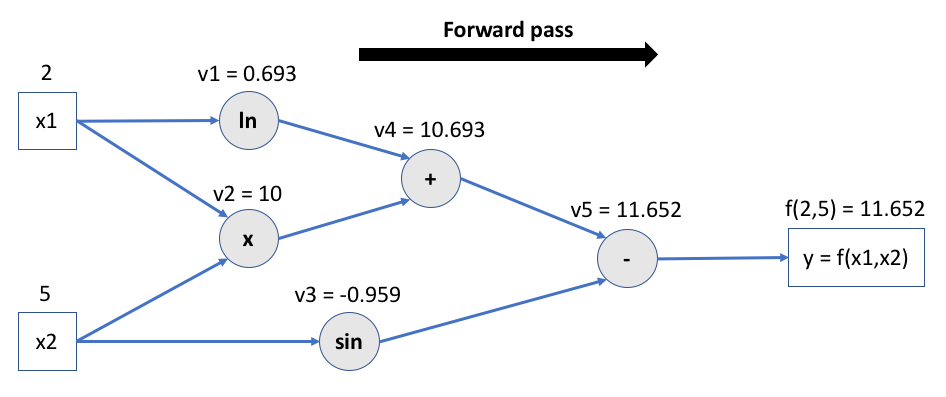
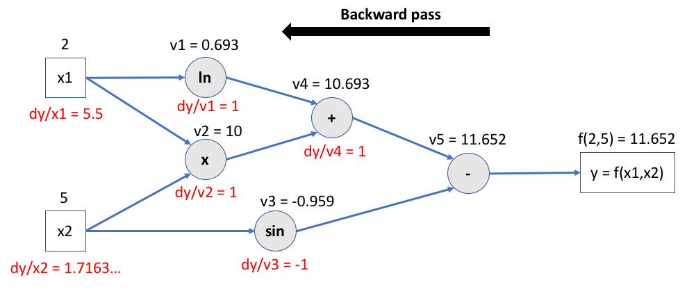

Training models¶
Environment setup¶
import platform
print(f"Python version: {platform.python_version()}")
assert platform.python_version_tuple() >= ("3", "6")
Python version: 3.7.5
import torch
print(f"PyTorch version: {torch.__version__}")
PyTorch version: 1.3.1
Problem formulation¶
Model lifecycle¶
There are two (repeatable) phases:
Training: using training input samples, the model learns to find a relationship between features and labels.
Inference: the trained model is used to make predictions.
Parameters Vs hyperparameters¶
\(\pmb{\theta}\) (sometime noted \(\pmb{\omega}\)): set of model’s internal parameters, updated during training.
Many models also have user-defined properties called hyperparameters:
maximum depth of a decision tree;
number oy layers of a neural network;
…
Contrary to internal parameters, they are not automatically updated during training.
The hyperparameters directly affect the model’s performance and must be tweaked during the tuning step.
Gradient descent¶

The gradient descent algorithm¶
Used in several ML models, including neural networks.
General idea: converging to a loss function’s minimum by updating model parameters in small steps, in the opposite direction of the loss function gradient.
The notion of gradient¶
Expresses the variation of a function relative to the variation of its parameters.
Vector containing partial derivatives of the function w.r.t. each of its \(P\) parameters.
1D gradient descent (one parameter)¶

2D gradient (two parameters)¶

2D gradient descent¶

Gradient descent types¶
Batch Gradient Descent¶
The gradient is computed on the whole dataset before model parameters are updated.
Advantages: simple and safe (always converges in the right direction).
Drawback: can become slow and even untractable with a big dataset.
Stochastic Gradient Descent (SGD)¶
The gradient is computed on only one randomly chosen sample whole dataset before parameters are updated.
Advantages:
Very fast.
Enables learning from each new sample (online learning).
Drawback:
Convergence is not guaranteed.
No vectorization of computations.
Mini-Batch SGD¶
The gradient is computed on a small set of samples, called a batch, before parameters are updated.
Combines the advantages of batch and stochastic GD.
Default method for many ML libraries.
The mini-batch size varies between 10 and 1000 samples, depending of the dataset size.
Model parameters update¶
Learning rate¶
\(\eta\) is the update factor for parameters once gradient is computed, called the learning rate.
It has a direct impact on the “speed” of the gradient descent.

Optimization algorithms¶
Gradient descent evolution map¶

Momentum¶
Momentum optimization accelerates the descent speed in the direction of the minimum by accumulating previous gradients. It can also escape plateaux faster then plain GD.

Momentum equations¶
\(\beta_k \in [0,1]\) is a friction factor that prevents gradients updates from growing too large. A typical value is 0.9.
Momentum Vs plain GD¶

RMSprop¶
RMSprop decays the learning rate differently for each parameter, scaling down the gradient vector along the steepest dimensions. The underlying idea is to adjust the descent direction a bit more towards the global minimum.
\(\epsilon\) is a smoothing term to avoid divisions by zero. A typical value is \(10^{-10}\).
Adam and other techniques¶
Adam (Adaptive Moment Estimation) combines the ideas of momentum and RMSprop. It is the de facto choice nowadays.
Gradient descent optimization is a rich subfield of Machine Learning. Read more in this article.
Gradients computation¶
Numerical differentiation¶
Finite difference approximation of derivatives.
Generally unstable and limited to a small set of functions.
Symbolic differentiation¶
Automatic manipulation of expressions for obtaining derivative expressions.
Used in modern mathematical software (Mathematica, Maple…).
Can lead to expression swell: exponentially large symbolic expressions.
Automatic differentiation (autodiff)¶
Family of techniques for efficiently computing derivatives of numeric functions.
Can differentiate closed-form math expressions, but also algorithms using branching, loops or recursion.
Autodiff and its main modes¶
AD combines numerical and symbolic differentiation.
General idea: apply symbolic differentiation at the elementary operation level and keep intermediate numerical results.
AD exists in two modes: forward and reverse. Both rely on the chain rule.
Forward mode autodiff¶
Computes gradients w.r.t. one parameter along with the function output.
Relies on dual numbers.
Efficient when output dimension >> number of parameters.
Reverse mode autodiff¶
Computes function output, then do a backward pass to compute gradients w.r.t. all parameters for the output.
Efficient when number of parameters >> output dimension.
Example: reverse mode autodiff in action¶
Let’s define the function \(f\) of two variables \(x_1\) and \(x_2\) like so:
It can be represented as a computational graph:

Step 1: forward pass¶
Intermediate values are calculated and tensor operations are memorized for future gradient computations.

Step 2: backward pass¶
The chain rule is applied to compute every intermediate gradient, starting from output.

Autodifferention with PyTorch¶
Autograd is the name of PyTorch’s autodifferentiation engine.
If its requires_grad attribute is set to True, PyTorch will track all operations on a tensor and provide reverse mode automatic differentiation: partial derivatives are automatically computed backward w.r.t. all involved parameters.
The gradient for a tensor will be accumulated into its .grad attribute.
More info on autodiff in PyTorch is available here.
# Create two tensors with autodiff activated
# By default, operations are not tracked on user-created tensors
x1 = torch.tensor([2.0], requires_grad=True)
x2 = torch.tensor([5.0], requires_grad=True)
# Compute f() on x1 and x2 step by step
v1 = torch.log(x1)
v2 = x1 * x2
v3 = torch.sin(x2)
v4 = v1 + v2
y = v4 - v3
print(f"v1: {v1}")
print(f"v2: {v2}")
print(f"v3: {v3}")
print(f"v4: {v4}")
print(f"y: {y}")
v1: tensor([0.6931], grad_fn=<LogBackward>)
v2: tensor([10.], grad_fn=<MulBackward0>)
v3: tensor([-0.9589], grad_fn=<SinBackward>)
v4: tensor([10.6931], grad_fn=<AddBackward0>)
y: tensor([11.6521], grad_fn=<SubBackward0>)
# Let the magic happen
y.backward()
print(x1.grad) # dy/dx1 = 1/2 + 5 = 5.5
print(x2.grad) # dy/dx2 = 2 - cos(5) = 1.7163...
tensor([5.5000])
tensor([1.7163])
Differentiable programming¶
Aka software 2.0.
“People are now building a new kind of software by assembling networks of parameterized functional blocks and by training them from examples using some form of gradient-based optimization…. It’s really very much like a regular program, except it’s parameterized, automatically differentiated, and trainable/optimizable” (Y. LeCun).